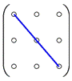
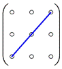

1.1.1 Частные виды матриц
Нулевой матрицей  размера
размера
 называется матрица, все элементы
которой равны нулю,
называется матрица, все элементы
которой равны нулю,
размера
называется матрица, все элементы
которой равны нулю,например:
.
Матрица размера называется матрицей-строкой
или просто строкой,
например:
Матрица размера называется матрицей-столбцом
или просто столбцом,
например:
.
Матрица называется квадратной, если число ее строк
равно числу столбцов, . Число  называется порядком матрицы,
называется порядком матрицы,
называется порядком матрицы, например при :
.
Главной диагональю квадратной матрицы называется
диагональ, составленная из чисел , идущая из левого
верхнего угла в правый нижний; побочной называется диагональ, идущая из
правого верхнего угла в левый нижний:
 
Квадратная матрица называется диагональной, если все
элементы, стоящие выше и ниже от главной диагонали, равны нулю:
.
Квадратная матрица называется треугольной, если все
ее элементы, расположенные по одну сторону от главной диагонали, равны нулю:
– верхняя треугольная
матрица;
 – нижняя треугольная матрица.
– нижняя треугольная матрица.Квадратная диагональная матрица с единичными элементами
называется единичной и обозначается буквой  .
.
.Например, единичная матрица 3-го порядка имеет вид:
 .
.Транспонированием матрицы называется преобразование,
состоящее в замене строк столбцами с сохранением их номеров.
Таким образом, строки данной матрицы будут в той же
последовательности столбцами транспонированной матрицы, и наоборот.
,  .
.
.В случае квадратной матрицы транспонирование сводится к
повороту матрицы на вокруг главной диагонали.